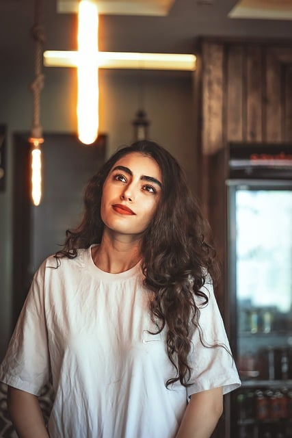
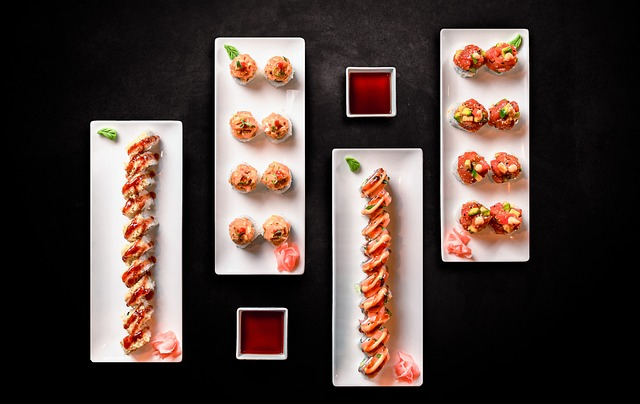
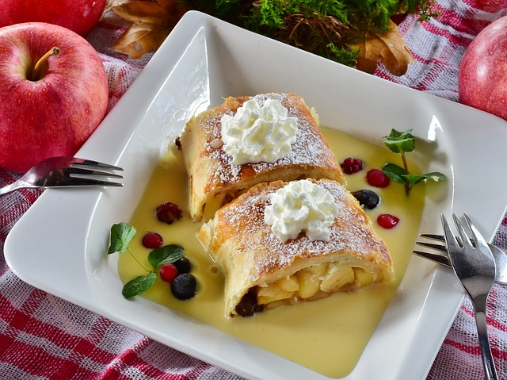

Sometimes we run into sites that are not very accessible or understandable. My personal goal is to create a website that can be intuitive, accessible to everyone, with creative design and inspiring images. You're welcome to my page, hope you're going to appreciate my work!
General informations

That's me! Hope that you like my blog so far.
I just told you what my main goal is... but I completely forgot to tell you who I am! Meet me: I’m Wendy. I'm 25, I'm italian and I live 50 km away from Turin, one of the main cities in northen Italy!
I studied web design online and self-taught during my first pregnancy because I felt unstimulated and had no job. I really want to make this passion an opportunity!
I love cooking, reading, writing and being a mom. I’m not a very sporty person but I put my heart in what I believe!
My favourite dishes ranking
I'd like to get to know each other better. So that's a ranking of three of my favourite dishes:
Lasagna, first dish prepared with different levels of pasta, tomato sauce, meat and chopped vegetables! Yummy!
 Sushi, japanese dish prepared with rolled rice, raw fish and vegetables.
 Strudel, my favourite desert prepared with apples, cinnamon, pine nuts and puff pastry. Delicious!
My favourite YouTube channel
I'd really like to talk about my favourite YouTube channel, because I think it really needs to have as many followers as possible. It's a crime themed channel, an italian girl called Elisa True Crime talks about the most important true crime cases in the world. I appreciate the effort and passion she demonstrates in her videos. Hope you're going to love her too!